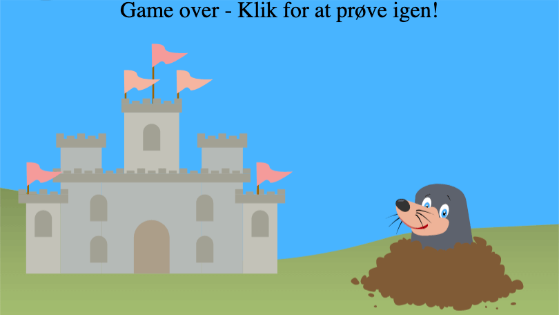
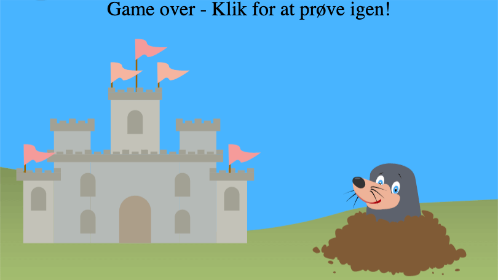

Muldvarpe Spil
I animationsforløbet har vi lavet et webbrowser-spil. Jeg har valgt, at lave et spil med en mulvarpe.
I animationsforløbet har vi lavet et webbrowser-spil. Jeg har valgt, at lave et spil med en mulvarpe.


 

Først har jeg gjort idéen konkret og visuel. Ved hjælp af en blyant, en saks og noget papir har jeg lavet en papir prototype - en slags fysisk model af det endelige spil.

Jeg har lavet et aktivitetsdiagram for at overskueliggøre processen. Aktivitetsdiagrammet viser alle funktioner i JavaScript-dokumentet. Derudover kan man aflæse if/else statements og timeout's
Spillet er bygget op af forskellige lag. Forgrundslaget er slottet og jordbunkerne, som muldvarpen gemmer sig bagved. Baggrundslaget er græsplænen og himmelen. Selve mulvarpen er placeret i mitterlaget.


Jeg har designet hele spillet i Illustrator. På den måde har jeg kunne eksportere elementerne i vector format.
Jeg har ønsket at lave gradient i græsset, men det har ikke været uden udfordinger. For at skjule muldvarpen helt, når den går ned, kræver det noget græs under jordbunken på forgrundslaget. Udfordringen har været, at græsset, der skal skjule muldvarpen, ikke følger samme gradient som græsset under jordbunken på baggrundslaget.
Efter flere timers research og eksperimentering frem og tilbage lykkedes det dog endeligt. Løsningen har været at lave overlays til græsfirkanterne.
I dette spil har jeg blandt andet brugt CSS til at lave animationer. Det har jeg gjort ved at bruge keyfreames.


Det første, der står i mit JavaScript-dokument, er, at spillet skal køre funktionen startSide(), når hjemmesiden er loadet. Herefter laver jeg nogle globale variabler, hvilket gør det muligt altid at bruge og ændre dem.
I funktionen startSide() fjerner jeg class'en "hide" fra #start, så den bliver synlig. Derefter venter spillet på, at man klikker et sted på skærmen, hvorefter den kører funktionen startGame()